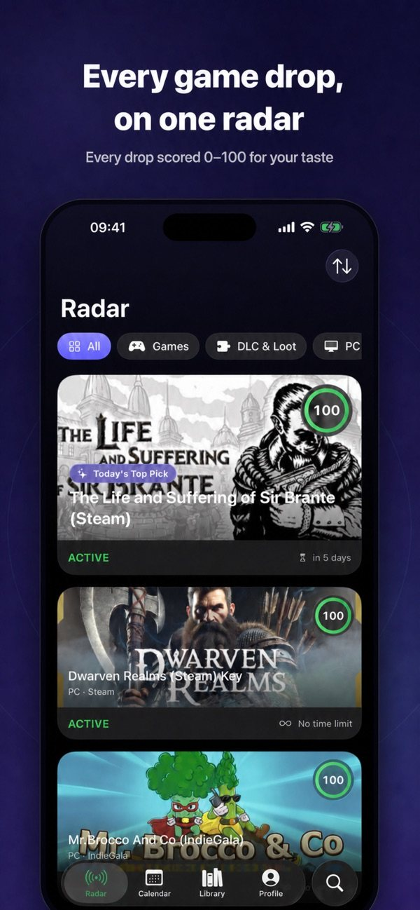

Kişisel Radar Puanı
Platform, tür ve oyun süresi tercihlerine göre her fırsata 0-100 puan verir ve neden sana uyduğunu açıklar.
Ücretsiz oyunlar hızla kaybolur. Kişisel radarın tüm fırsatları toplar, zevkine göre puanlar ve ilgini çekenler bitmeden seni uyarır.

Kaçırmaya değer hiçbir şey kalmasın
Platform, tür ve oyun süresi tercihlerine göre her fırsata 0-100 puan verir ve neden sana uyduğunu açıklar.
Akıllı hatırlatıcılar, bitiş takvimi ve ana ekran widget'ı kaydettiğin fırsatların süresi dolmadan seni haberdar eder.
Oyunları İstek Listesi'ne veya Backlog'a kaydet, Alındı olarak işaretle ve tek dokunuşla resmî mağaza sayfasını aç.
Kaynak deposuna git, sürümleri incele veya bir sorun bildir.
GitHub'ı aç →Game Drop Radar'ın kişisel veri toplamadığını, yalnızca anonim çökme raporları gönderdiğini ve tercihlerini cihazında tuttuğunu öğren.
Politikayı oku →Uygulamanın kullanım koşullarını, satın alma ve sorumluluk esaslarını oku.
Koşulları oku →